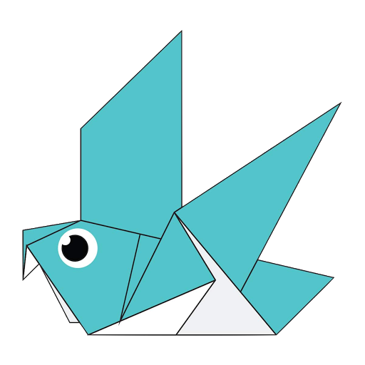
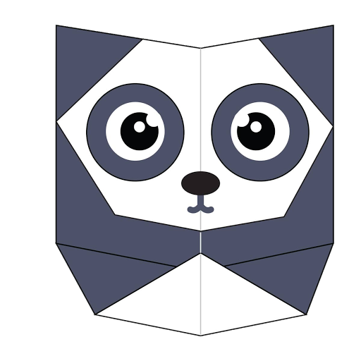

Interesting facts about Camel
-
Camel's ear are furry
-
Camel can move easily across the sand.
-
When they find water, they drink as much as possible.
Interesting facts about Chameleons
- Chameleons are reptiles that are part of the iguana suborder
- Changing skin color is an important part of communication among chameleons
- Most chameleons have a prehensile tail that they use to wrap around tree branches

Interesting facts about Pigeons
- Pigeons are incredibly complex and intelligent animals
- Pigeons are renowned for their outstanding navigational abilities
- Pigeons have excellent hearing abilities.
Interesting facts about Teddy
- The Teddy Bears’ Picnic song was originally called The Teddy Bear Two Step
- Winnie the Pooh was based on a real bear
- The smallest commercially available stitched teddy bear is a mere 0.29 inches tall, made by South African “microbear”
maker Cheryl Moss, whose largest creations are just taller than half an inch

Interesting facts about Panda
- Giant pandas are good at climbing trees and can also swim
- Pandas go from pink to white and black (or brown)
- Pandas are "lazy" — eating and sleeping make their day
Interesting facts about Cicada
- All cicada species in North America came from a common ancestor
- cicada species switches from being on a 13-year cycle to a 17-year cycle